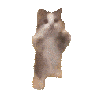

üíñWHAT??? HUH?? WOW üíñ

Ei! Para celebrar, fiz-te um poema:
Há quem colecione cromos
Ou pedras ou conchas ou cartões
Eu coleciono com os olhos
E guardo o que apanhei em garrafões
A minha prateleira, de antes vazia
Enche-se agora de garrafões
Moram neles as vivas memórias
Que colecionámos os dois